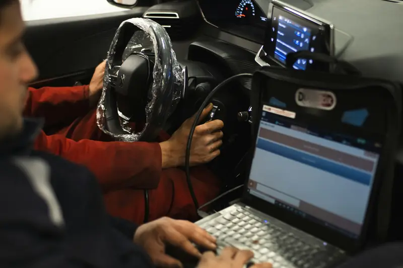

Group 01 / 02
Scanning and Fault Finding
These services find the fault and trace it to its source.
5 servicesA warning light tells you something is wrong, not what to fix. We scan every module, test the live data and trace each code back to its true cause, because we won’t let you pay for parts your Mercedes doesn’t need.
Some faults show up as a light. Others show up as a feeling behind the wheel. Here’s what to watch for.
Likely systemEngine, fuel or emissions
Book within a few daysLikely systemEngine misfire
Drive gently and book nowLikely systemGearbox, conductor plate or software
Book nowLikely systemWheel speed sensor or brake system
Book nowLikely systemAIRMATIC air suspension
Book nowLikely systemBattery, charging or wiring
Book within a few daysLikely systemAirbag system
Book nowLikely systemClimate control or refrigerant
Book soonGuessing is expensive on a Mercedes. Replacing parts without a proper diagnosis often leaves the real fault in place, and you pay twice.
The first scan also matters. Mercedes advises technicians not to erase the first full scan, because the original fault information is lost with it. A quick code-clear at a petrol station can hide exactly what we need to see.
Small faults also grow in UAE heat. A dubizzle Cars review of over 20,000 inspections in 2026 found that about 14% of cars had battery health below 30%, and it advised drivers never to ignore dashboard warning lights. A weak battery can trigger false codes across many modules, so early testing saves time and money.
What UAE inspections show
From a single warning light to a car full of error messages, we diagnose every system in your Mercedes.
These services find the fault and trace it to its source.
5 servicesWe scan every control unit in your Mercedes, not just the engine. The quick test shows all stored and current faults across the car in one report.
Ask about thisWe read the fault code, check freeze frame data and run the guided test. This tells us whether the cause is a sensor, a misfire, a leak or a fuel issue.
Ask about thisWe watch real-time values from sensors and modules while the engine runs. This catches faults that don’t store a code, such as a lazy sensor or a drifting reading.
Ask about thisWe trace intermittent faults to damaged wiring, corroded connectors or failing modules. Power windows, lights, sensors and comfort features are all covered.
Ask about thisWe test battery health, alternator output and power drain. Low voltage causes false codes in Mercedes cars, so this is often our first check.
Ask about this
These services cover specific systems and the software that runs them.
5 servicesWe read gearbox faults, check fluid temperature data and test the conductor plate. This tells us whether the fix is software, fluid, a sensor or transmission repair.
Ask about thisWe test wheel speed sensors, the ABS module and brake wear sensors. Faulty readings here can switch off ESP, cruise control and driver assistance features.
Ask about thisWe read ride height sensors, test the compressor and check for air leaks. This prevents a small leak from burning out an expensive compressor.
Ask about thisWe read airbag faults and test seat sensors, clock springs and wiring. A red airbag light means the system may not deploy in a crash.
Ask about thisWhen a module is replaced, it must be coded to your car before it works properly. We carry out coding, adaptations and software updates where your model supports them.
Ask about thisColour tells you how urgent a warning is. Red means stop safely. Yellow means book a check soon.
Engine or emissions fault stored
Book a diagnostic checkActive misfire that can damage the catalytic converter
Reduce speed and book nowEngine is overheating
Stop safely and switch offOil pressure has dropped
Stop safely and call usCharging system fault
Drive to a workshop or call usStability or anti-lock system fault
Drive carefully and book soonLow brake fluid or brake fault
Stop and get it checkedAirbag system fault
Book nowLow pressure in one or more tyres
Check pressures soonMany garages plug in a cheap code reader and call it diagnosis. On a Mercedes, that only shows part of the picture. A generic reader can tell you why the check engine light is on, but OBD-II is an emissions standard, not a repair system.
| Feature | Generic OBD-II scanner | XENTRY Diagnosis |
|---|---|---|
| Engine and emissions codes | ||
| Mercedes-specific codes | Limited | |
| Gearbox, ABS, airbag, AIRMATIC modules | Few or none | All modules |
| Live data from every module | ||
| Guided tests from Mercedes | ||
| Actuation tests (running parts on command) | ||
| Coding and adaptations | ||
| Full report of all faults |
Every fault code follows a pattern. The first letter shows which system the fault is in.
Engine, fuel, ignition, gearbox
Airbags, seats, lights, comfort systems
ABS, ESP, steering, suspension
Communication faults between modules
The second character tells you who defined the code. A 0 usually means a generic code used by all carmakers. A 1 usually means a Mercedes-specific code, which a generic scanner may misread or miss completely.
A code also doesn’t name the broken part. It names the reading that looked wrong. A lean-mixture code, for example, can come from a vacuum leak, a dirty sensor or a weak fuel pump. That’s why we test before we replace.
Diagnostic cost depends on how complex the fault is and how long it takes to trace.
| Factor | Effect on time and cost |
|---|---|
| Single stored fault with a clear cause | Quick, lowest cost |
| Multiple warning lights | More testing across systems |
| Intermittent fault that comes and goes | Needs road tests and data logging |
| Electrical or wiring fault | Needs circuit tracing and connector checks |
| Fault after a previous repair elsewhere | Needs checking of earlier work |
| Module replacement needing coding | Adds coding and adaptation time |
We confirm the diagnostic fee before we start.
Heat is hard on batteries, and batteries power every module in your Mercedes. When voltage drops, modules can lose communication, store false codes or switch features off. A low battery can even stop a scanner from talking to the engine computer at all, which is why low voltage is always our first check.
Heat also ages wiring and connectors. Plastic housings turn brittle, seals harden and moisture from AC condensation can corrode pins. These faults often show up as random warnings that come and go.
High cabin and engine bay temperatures also stress sensors. Coolant, oil and gearbox temperature sensors work hardest in summer traffic, and a drifting reading can change how the engine and gearbox behave.
Five clear steps, the same on every job, so you always know what is happening and why.
We ask when the fault appears and how the car behaves. Your description guides where we start testing.
We test the battery, then run a full XENTRY quick test of every module. All faults are saved before anything is cleared.
We follow guided tests, check live data and inspect wiring and parts. A road test confirms symptoms that only appear while driving.
We explain the cause, the fix and the cost in plain words. Nothing is repaired until you approve the quote.
After the repair, we rescan the car and road test it again. You leave with a clean scan and a full report.
MOIAT-certified, Mercedes-focused and rated 4.5 from 765 Google reviews. Here is what that means for your car.
Our Mercedes technicians work on these cars every day and know the common faults on each engine and gearbox.
We use XENTRY to reach every module in your car. This gives us the same depth of data that Mercedes itself relies on.
We scan the whole car, not just the engine. Hidden faults in other systems are found before they cause trouble.
We test before we replace anything. You only pay for the parts and labour that actually fix the fault.
You get a report listing every fault, its cause and the fix. It’s useful for your own records and for future resale.
You see the diagnostic fee and repair quote before any work starts. If we find something extra, we call you first.
It depends on the fault. A single stored fault is quicker to diagnose than an intermittent electrical issue. We confirm the fee before we begin.
A full quick test takes about 30 to 60 minutes. Complex or intermittent faults may need extra testing and a road test.
If the light is steady and the car drives normally, you can usually drive gently to a workshop. If it’s flashing, or a red warning appears, stop safely and call us.
No. A generic scanner mainly reads engine and emissions codes. XENTRY reads every module, including the gearbox, ABS, airbags and suspension.
Clearing a code only switches off the light. The fault is still there. Proper diagnosis finds the cause so the light stays off.
Yes. We handle coding, adaptations and software updates after repairs where your model supports them.
Yes. A full scan is part of our pre-purchase inspection, which shows hidden faults the seller may not mention.
 Brake RepairPads, discs, DOT 4 Plus fluid, ABS and AMG brakes.
Brake RepairPads, discs, DOT 4 Plus fluid, ABS and AMG brakes. Transmission Repair7G, 9G-TRONIC and DCT gearbox repair and rebuilds.
Transmission Repair7G, 9G-TRONIC and DCT gearbox repair and rebuilds. Engine RepairTiming chains, head gaskets, leaks, turbos and AMG V8s.
Engine RepairTiming chains, head gaskets, leaks, turbos and AMG V8s. PaintingPaint-code matching, panel paint, resprays and ceramic coating.
PaintingPaint-code matching, panel paint, resprays and ceramic coating. Body ShopCollision, dent, bumper and aluminium repair with ADAS calibration.
Body ShopCollision, dent, bumper and aluminium repair with ADAS calibration. Oil ChangeMB 229-approved oil, genuine filters and ASSYST reset.
Oil ChangeMB 229-approved oil, genuine filters and ASSYST reset. Electrical RepairBattery, SAM module, wiring, 48V and lighting faults.
Electrical RepairBattery, SAM module, wiring, 48V and lighting faults. AC RepairR1234yf regas, compressors, leaks and climate control.
AC RepairR1234yf regas, compressors, leaks and climate control.Don’t let a warning light turn into a costly repair. Book your Mercedes diagnostic check today, and our team will find the real cause, explain it clearly and fix it right the first time. We serve Mercedes owners across Abu Dhabi, from Khalifa City to Yas Island.